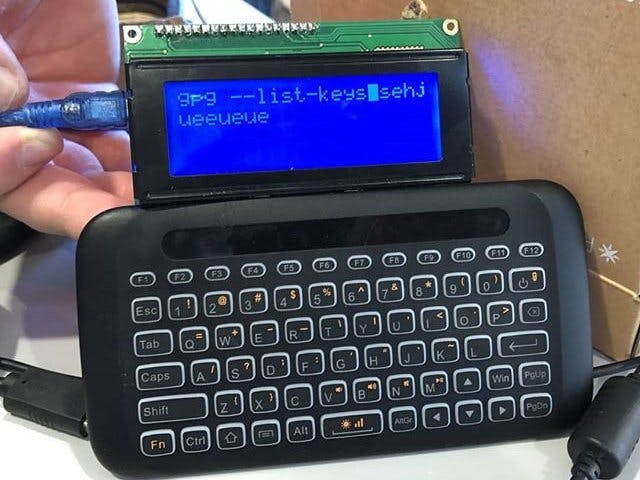
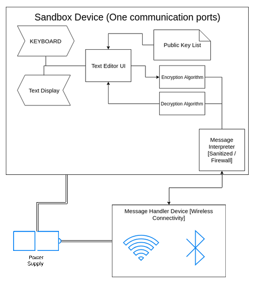
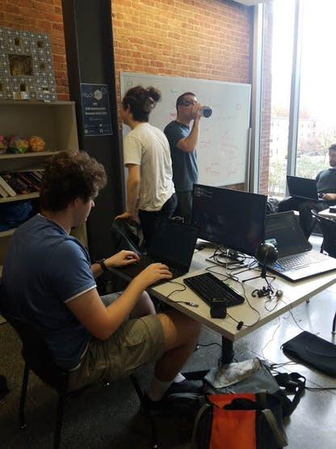
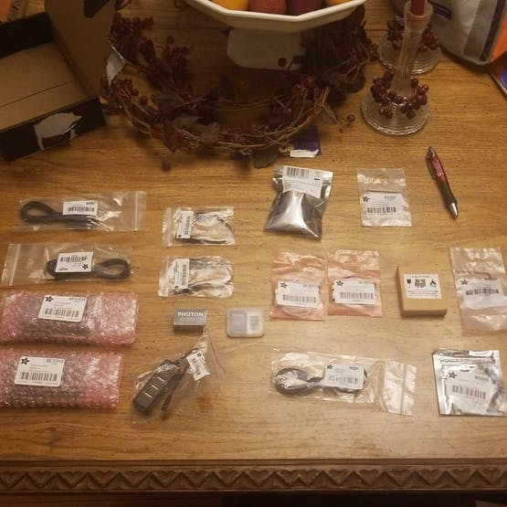
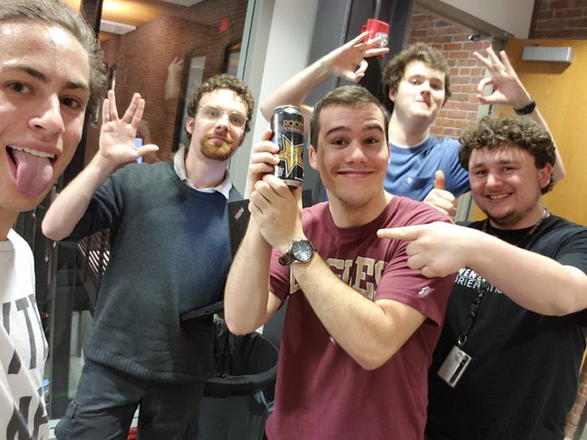
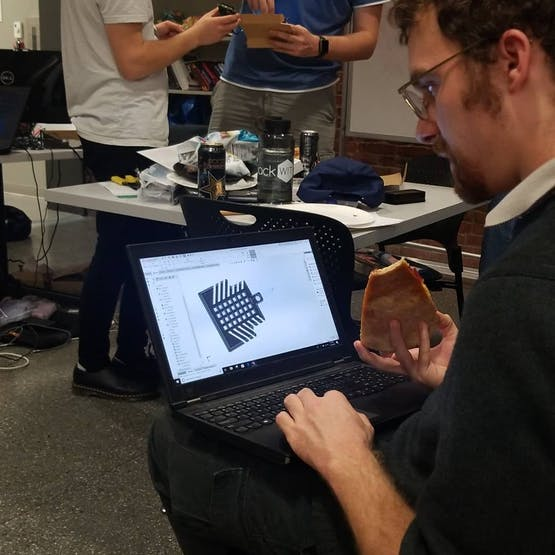
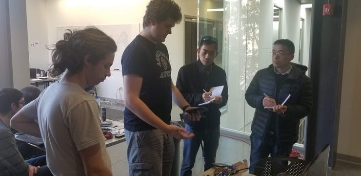
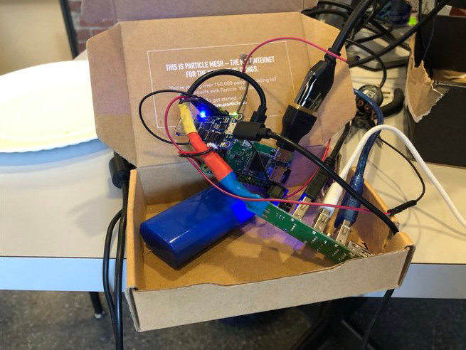
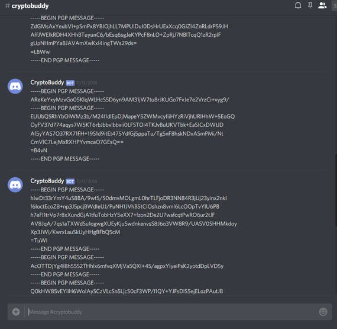
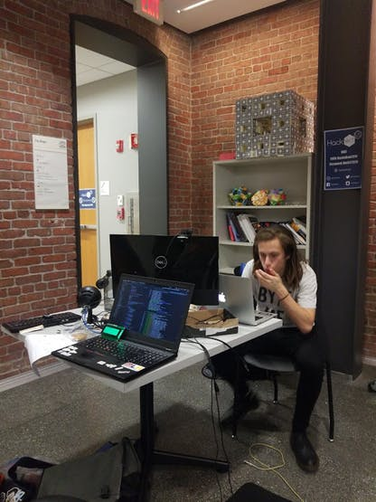

Cryptobuddy (HackWITus 2018)
| Projects
Final Product: Front View
We believe in the idea that privacy is always possible. Of course, there is always the risk with putting trust in your favorite messaging apps. As technology becomes more convenient for the user, more vulnerabilities start to reveal themselves with privacy, control, and certainty.
This is what drove the force behind our Hackathon idea. As a team of five undergrad students with different backgrounds, we designed, programmed, and assembled a pocket computer that allows for a user to encrypt a typed message.
Technical Design

Diagram of Sandbox Device
It’s a simple idea that relies on the minimalist nature of the hardware and software. We used a Raspberry Pi Zero for the Sandbox device. We were originally going to use an Arduino, but it was too difficult to program an encryption algorithm on an 8-bit platform that already has many limits with dynamic memory allocation.
It is called a “Sandbox Device” because it can only communicate with the message handler through a sanitized channel. The message handler is a Particle Photon which is programmed by Nathan to upload encrypted text to a messenger API (We choose Discord). Another rule that makes the sandbox encryption secure is that any messages leaving the sandbox must be encrypted. In vice versa, any messages being sent to the device can only be displayed on its screen after decryption. There would be no way to send the raw text outside to be read by an external device. This is a feature that makes the device very secure and ensures that your messages are only read from the screen. If you want full security, don’t use the device in plain sight. lol!
CryptoBuddy Practice Pitch
Implementation

Our army at work!
Being our first Hackathon, we didn’t know what to expect in terms of supplies. To play it safe, we ordered our own hardware through Adafruit. They were really fast with the shipping as we ordered our supplies the week of the Hackathon.

The Arsenal
It was also a coincidence that the Particle Boron Wyatt ordered was delivered the night before HackWITus started. While the new line of their IoT devices was ahead of its time, we decided to stick with the Photon board. Guess Wyatt will be using the Boron for something more ambitious.
Meet the Team

Nova (Far Left), Ben (Second Left), Devin (With Can), Nathan (Back), Wyatt (Far Right).
All five of us knew our roles within the execution of the project.
-
Nova Trauben (CS Major 2022) Programmed the core functions of the Pi that would allow the raw text to encrypt securely and spit out of the serial port to the Photon.
-
Nathan Robinson (CS Major 2022) Programmed that “Particle Magic” which would get our messages from the Pi to Discord. Used his own utility to program the Photon (po-util).
-
Wyatt Phillips (Electrical Major, CS Minor 2021) Programmed the UI aspect of the sandbox device. Wrote library which allows the Pi to communicate with the LCD display. Made sure the keyboard was heard and the messages were typed.
-
Devin Taylor (Electrical Major 2020) In charge of setting up the electronics layout. Did all the soldering and other on hands stuff. Executed the print job of the case.
-
Benjamin Guest (Mech. Major 2020) Whipped up a nice case for the device in Solidworks.

Ben hard at work with his case.
We were surprised with the design Ben choose. I think we had our eyes mostly on the ribbed cage enclosure for the back, making the device easy to grip and, I mean, it just looks cool cmon!

The precious case.
Meanwhile, we were live-streaming our process on YouTube. Well, mostly just Wyatt’s coding on the UI. But hey, there were two cameras in the corner. So we recommend you check it out.
Official Livestream.
Final Product
After 24 hours of hard work, we came out with an exceptional device. We almost feared that our project wouldn’t be presentable in time. But we accelerated during the final hours to make sure that we made our goal before the deadline. The judges were impressed by our build. Not to mention all of the other cool projects built at the Hackathon.

Presentation to HackWITus judges.

Internal Circuitry of CryptoBuddy

CryptoBuddy was able to encrypt and send the message over Discord.
Takeaway
The teams communication went surprisingly well for first timers. It was seen, as expected, that a lack of communication between different aspects of the project were present. We’ve learned to not over-fixate ourselves with our current work and take the time to assist with other crucial parts of a project, even if they are not a dependency to your work.
We also leaned to not over-work during the 24 hour period. While our team was ambitious, we deprived ourselves from break time and of course, sleep. It was fun, but it would have been a great idea to bring a sleeping bag.

Sleep Deprivation at 2 AM
Over all, we were glad to participate in our first Hackathon. The culture of making and hacking is getting more popular. Naturally, many universities are responding by hosting their own events. If you are reading this and seem interested in the Hackathon Hype, we highly suggest you hop on the wagon. It’s like joining a startup without the long term commitment. Its mostly about makers and hackers coming together to make something awesome.
Devpost: https://devpost.com/software/cryptobuddy
Hackster.io: https://www.hackster.io/byte-knights/crypto-buddy-0d2845
GitHub Repo: https://github.com/ByteKnights/CryptoBuddy-Final